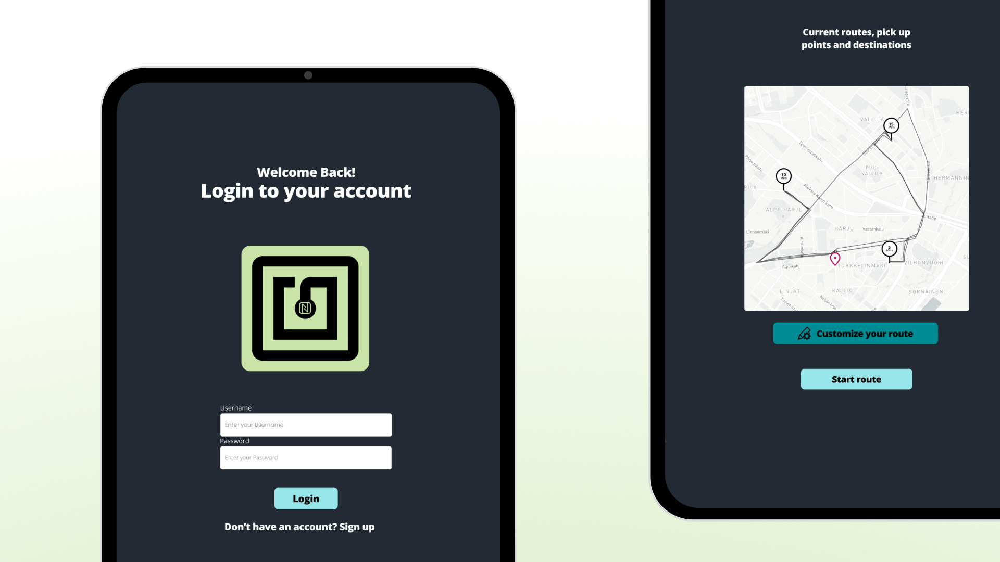
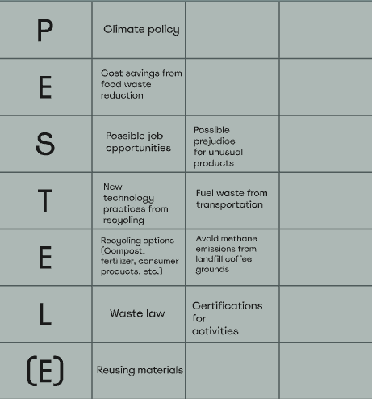
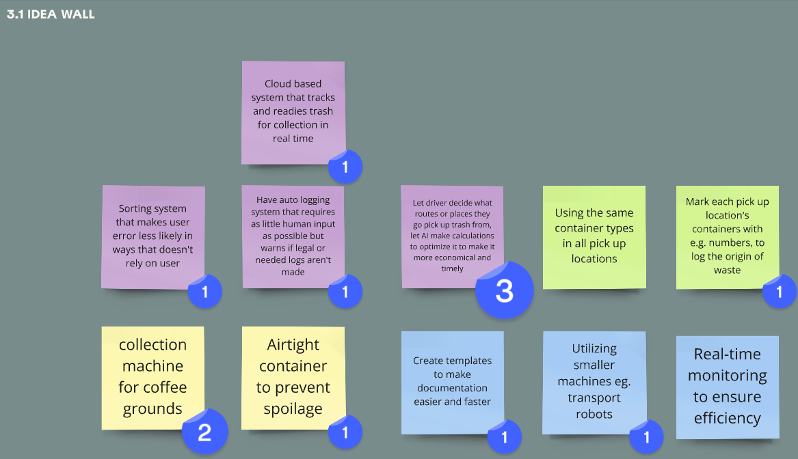

L&T - Hävikki haaste
Osallistuin Laurean service design -kurssilla projektiryhmään, jossa kehitimme L&T:lle lajittelu- ja kuljetusratkaisun ravintola-alan ruokasivuvirtojen kierrätykseen. Keskityimme käytettyjen kahvinporojen logistiikkaan.
Discover
Hyödynsimme PESTEL-analyysiä toimintaympäristön ja markkinoiden arvioimiseen. Tämä auttoi meitä hahmottamaan haasteet ja mahdollisuudet.
Define
Luoimme käyttäjäpersoonan kuljettajasta, joka haluaa enemmän joustavuutta työvuoronsa suunnitteluun.
ideaseinä
Kokosimme ratkaisuvaihtoehtoja Miro-ideaseinälle ja äänestimme niistä. Voittajaksi valikoitui Wolt-tyyppinen sovellus, jossa kuljettaja voi valita noudettavat kohteet.
Prototyyppi
Rakensimme yksinkertaisen prototyypin, joka havainnollistaa sovelluksen toimintaperiaatetta ja käyttäjäkokemusta.
Voit käydä kurkkaamassa protoa!
L&T - prototyyppi